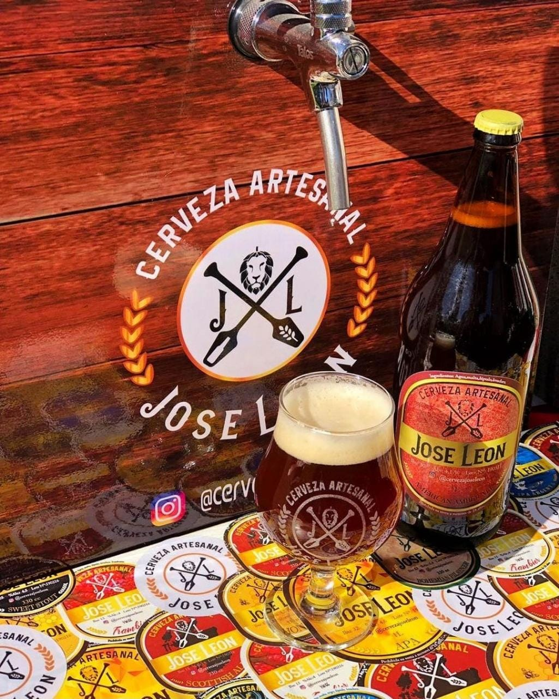

fundada a traves de una idea concebida en el oktoberfest de 2015 en villa general belgrano,nos juntamos 4 amigos con el afan de ser parte de la comunidad de cerveceros para aclarar nuestras gargantas en las largas juntadas de truco y asado; y alla por agosto del 2019 comenzamos el camino de nuestra historia. nos anotamos en un curso para principiantes del cual salimos con mas dudas que certezas, pero con la voluntad y la alegria intacta.

En diciembre del 2019 realizamos nuestra primer coccion ,una Stout,con mucha levadura pero de un sabor unico que nos confirmaria que ese era el camino a tomar, siempre respetando la calidad del producto. al dia de la fecha, aumentamos nuestro volumen de produccion ,mejoramos nuestro standard de calidad ,y no paramos de innovar en los estilos fiel a nuestros gustos y el de los clientes que se acercan a compartir charlas con nosotros.